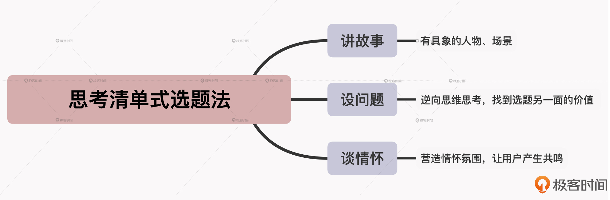

- 00 开篇词 短视频时代下，怎么把握好变现风口？.md.html
- 01 爆款短视频的底层逻辑：用心拍的短视频为啥没人看？.md.html
- 02 爆款短视频的底层逻辑：如何轻松打造自我特色？.md.html
- 03 精益创业法：如何快速跨过从0到1这道坎？.md.html
- 04 SWOT法：这么明显的个人优势你为啥就是看不到？.md.html
- 05 效用函数法：如何用量化的方式进行高效创作？.md.html
- 06 二次创新实验法：如何打造个人的差异化定位？.md.html
- 07 平台定位：如何选择最适合自己的创作平台？.md.html
- 08 如何快速找到各大短视频平台的正确切入点？.md.html
- 09 选题（上）：如何利用思考清单找到合适选题？.md.html
- 10 选题（下）：如何为不同的内容定制合适选题？.md.html
- 11 优劣分析法：如何快速筛选适合创作的视频素材？.md.html
- 12 标题（上）：如何利用微创新巧妙找到爆款标题？.md.html
- 13 标题（下）：如何用对号入座的方式抓住标题亮点？.md.html
- 14 视频封面（上）：如何快速抓住用户注意力？.md.html
- 15 视频封面（下）：如何传递最有价值的信息？.md.html
- 16 视频剪辑：如何轻松掌握视频化剪辑的三大公式？.md.html
- 17 效果反馈法：剪辑很容易，为什么你却一直学不会？.md.html
- 18 剪辑对比（上）：如何避开常见的短视频剪辑陷阱？.md.html
- 19 剪辑对比（下）：如何利用剪辑技巧提升视频质量？.md.html
- 20 拉片法：用电影创作的方式学习爆款短视频运营技巧.md.html
- 21 用户留存率：为什么粉丝很多但忠实拥趸却很少？.md.html
- 22 点赞率（上）：如何有效提升短视频的点赞量？.md.html
- 23 点赞率（下）：三种方法轻松提升用户对内容的认可度.md.html
- 24 上瘾机制：为什么视频观看量很高却没人留言？.md.html
- 25 避坑指南：为什么很多短视频账号中途做不下去了？.md.html
- 26 如何找到适合自己的短视频变现模式？.md.html
- 27 多元化变现：如何明确不同创作阶段的变现任务？.md.html
- 28 多内容变现：不同内容的主打变现模式是什么？.md.html
- 结束语 一切成大事者，都是终身学习者.md.html
- 捐赠
09 选题（上）：如何利用思考清单找到合适选题？
你好，我是周维。
从今天开始，我们就进入了课程的第三个模块：创作篇。接下来，我会用11节课的时间带你学习“如何创作出好的短视频内容”。我会从选题出发，围绕内容创作的素材筛选、起标题、做封面等，介绍具体的短视频创作知识，并会分享剪辑时的三大公式，以及讲解一些我认为非常关键的剪辑技巧和避坑指南，让你掌握视频剪辑的底层逻辑。
首先我们要来学习的是如何做好短视频的选题工作，一个好选题是创作爆款短视频的第一步。
选题决定着创作方向，也代表着创作者对外输出的价值观，而这种价值观会直接影响创作者的个人定位和IP塑造。从业六年来，我见到过很多陷入瓶颈期的短视频创作者，并不是他们不知道怎么拍，而是不知道要拍什么，觉得自己能拍的东西都拍完了，从而陷入到创作焦虑中。
当然，现在的短视频平台一般都会推出一些官方活动和话题，我们可以结合自身经验、日常观察、职业背景或用户需求等角度来进行选择和创作。不过这只能算是一种权宜之策，我们还是需要真正掌握确定合适选题的方法，这样不管在哪个创作阶段，我们的创作方向才都是清晰、不迷茫的。
接下来的两节课，我会从广度与深度两个不同的维度入手，带你理解确定短视频选题的正确方法。
今天，我们就先来看看，站在广度的视角上，如何利用思考清单的方式找到最适合自己的内容选题，提高作品成为爆款的几率。
以思考清单的方式寻找合适的选题
在实际的短视频创作中，会陷入到选题的困境中，主要原因是无法衡量选题的正确性。
所谓的正确性就是说寻找到的选题适合自己的定位及创作方向，并且也是在众多平台上都通用的，这样起码不会浪费自己更多的创作成本，也能提高作品成为爆款的几率。
那么，要想提高选题的正确性，就需要通过循序渐进的思考路径，一步步在每一个环节中认清自己想要的、剔除不想要的，然后找到适合自己的选题，这些步骤就像是一个可以清晰完成任务的清单一样，所以我把它叫做思考清单。
下面，我就给你介绍下三种用思考清单来找选题的方法。
讲故事
我们先来说说第一种找选题的方法：讲故事。
人生来就爱听故事，可以说人类是在一个个的故事中认知和理解世界的。在短视频内容创作中，我们就可以采用讲故事的方式去寻找合适的选题，因为视觉化的语言会更加立体、直观，用户更容易产生代入感和深深的共鸣，这样也就能让视频内容得到更广泛的传播。
采用这一方法来找选题的时候，具体的思考路径是这样的：
- 通过平台上的热点话题、受用户欢迎的内容、当下大众热议的事件/人物或者第三方数据平台上的热点榜单等等，搜索与个人定位相关的所有选题。
- 梳理、总结收集到的所有选题，并思考一个问题：哪些选题适合以故事的形式去表达？注意，这里“适合”的标准是说采用讲故事的方式来表达，因为这会让内容更清晰、直观，输出的观点或价值会更容易让用户接受。
- 经过二次筛选后，再来思考一个问题：剩下的选题是否符合5W1H原则，即故事中可否体现出具体的事件（What）、原因（Why）、人物（Who）、时间（When）、地点（Where）、经过（How）。这样通过具象的指标将内容中涉及的关键因素表达清楚，就会更容易得到用户的喜爱。
- 最后，思考如何在故事中体现自己的内容优势：即输出的观点或传递的价值能够为用户带来知识获得感。
我举个例子。假如我主攻的是职场成长方向的内容类型，现在要寻找适合自己的故事讲述类的选题内容。具体要怎么做呢？
首先，我可以通过各个平台上的热门话题、焦点新闻、同行借鉴、数据统计等方式，寻找到一些适合职场领域的话题，比如有“互联网公司员工因为吐槽遭到辞退”“职场小白如何顺利渡过试用期”，等等。
然后，看一下寻找到的选题中，哪些更适合通过故事的形式表达出来，更容易让用户产生共鸣。这其中，“职场小白如何顺利渡过试用期”这个选题，正好我身边有朋友经历过，因此可以用他的真实经历来讲故事。
接着，我来分析一下这个故事中的5W1H具体要如何展现出来：
- 人物：我的朋友
- 事件：职场小白如何顺利渡过试用期
- 时间：最近
- 地点：同个生活的城市
- 结果：试用期没有通过
分析完这些之后，就进入到个人优势要如何体现在这个故事内容中了。这里我可以结合自身在职场知识方面的输出，围绕故事内容重点讲述之后，利用自己的专业知识，为初出茅庐的实习生提供一些实习期间的注意事项以及改进建议。
这样通过故事讲述清单的层层思考路径，我就选定了最合适的内容选题。
所以，这就是通过讲故事的方式找到合适选题的魅力所在，它可以让你将一个与自己定位相契合的内容，通过故事化的方式更好地传递给用户，从而让用户看到你内容的真正价值。
设问题
我们接着来说第二种方法：设问题。
提问不仅可以形成悬念、吸引用户的注意力，也可以作为一种逆向思维，让我们在找选题的过程中通过提问的方式找到不一样的讲述角度与观点。
如果我们采用设问题的方式来找选题，其思考路径是这样的：搜索与个人定位相关的所有选题；围绕收集到的各种选题进行提问；发现对用户有价值的知识点，结合个人定位进行观点输出。
请注意，这里的提问要采用“开放式”与“封闭式”两种方法交替进行。那你可能要问了，什么才算是开放式，什么才算是封闭式呢？
所谓的开放式，简单来说就是指问题的答案不是唯一的。比如说，你如何看待学习这件事？这个问题的答案就一定不是唯一的，不同的人会有不同的感想。反之封闭式就是在提问后，得到的答案是唯一的、具体的。比如，现在问你吃饭了吗？回答只能是吃了或者没吃。
采用开放式的方式去提问，除了可以带给用户不一样的价值点之外，还可以唤醒用户，在留言区进行互动，提高账号活跃度；而采用封闭式的提问方式，带来的答案只会是YES或NO，这样可以向用户传递自己新颖、有价值的观点，显示自我的权威。
这两种提问方法，都可以让我们在收集到各种话题后，快速找到不一样的切入角度，找出这个选题不一样的价值点。
我还是来举个例子。假设我是一个关注个人成长的短视频创作者，按照第一步，我收集到了几个与时间管理相关的选题。然后，我来预估一下“正确使用时间清单的3个方法”这个选题是否合适。
所以在提问时，如果采用开放式的提问，这个选题可以变成：正确使用清单对一个人的影响有多大？使用清单与不使用清单带来的结果是什么？而如果采用封闭式的提问，这个选题可以变成：个人成长中使用清单是必备技能吗？学会使用清单算不算一个人成熟的表现？
如此一来，我就可以结合自身的个人定位，将选题变成带有自我印记的知识输出就行了。
谈情怀
情怀，你可以理解为是一种心境或者情绪。谈情怀的选题，就是说可以通过内容去表达情感，或是能让用户在内容讲述的过程中产生共鸣。
那么，当我们采用谈情怀的方式去寻找选题时，需要具备的思考路径是这样的：
- 站在自我定位的角度，收集合适的情怀话题；
- 对这些选题进行逐一筛选，看看哪些话题具有强烈冲击力，可以体现出用户的情感诉求；
- 结合个人优势，将寻找到的情怀点融入到内容创作中。
不过，相比前面两种选题方法，情怀类型的会比较抽象，所以这里我教给你一个判断小技巧，就是根据你的第一印象来看收集的选题内容，是情感多一些，还是叙事多一些。如果你不会更多地关心前因后果，而是只在乎当下内容呈现的这一刻，就表示这个选题是情怀向多一些。相反，如果你有迫切想了解故事中究竟发生了什么、后续发展如何等偏叙事向的感受时，那它多半就不属于情怀类选题了。
情怀类选题很容易打动人心，但是这里有个常见的误区：视频里呈现的情感诉求点太多。一旦情感点太多，人的注意力就会被分散，你的视频冲击力就变弱了。
那怎么选择最有冲击力的情感诉求呢？我来给你讲一讲步骤。
第一步：记录选题内容中传递的每一种情感。比如你感知到，这个视频里分别展现了悲伤、快乐、愤怒三个情感点，那你就把所有感知到的情感点都记录下来。
第二步：从记录的情感点中选择一种与你内容中呈现的故事、观点等相匹配的情感点，其他与此没有任何关系的情感点可以放一边。总之，呈现的内容要与情感点吻合、一致。
经典的选题技巧
刚刚，我们通过思考清单的方式，找到了合适的选题，但是，如果你想持续产出视频，并且尽快吸引大量的粉丝，还需要使用一些经典的技巧，下面我来具体给你讲一讲。
技巧一：和用户关心的话题相结合
不管你是采用哪种方法来寻找选题，都不要忘记热点是最重要的维度之一。
在现在这个优秀内容不断涌现的时候，我们想脱颖而出、赢在起跑线上，选择与热点相关的选题是最直接的方法，不管是当下发生的热点事件、平台上受欢迎的话题、用户最关心的问题，还是同类型中最受欢迎的内容，这些都是收集选题的渠道来源。
这样，你的内容在更容易地抓住用户注意力的同时，也会获得平台更多的曝光推荐。
举个例子，如果你想采用谈情怀的方式讲母爱，你就可以选取当下热门的电视剧，把体现母爱的片段剪辑在一起，再加上自己的解读；或者是选择热搜榜上的同主题新闻，创作相应的内容。比起你用语言来描述母爱，这种结合热点的呈现形式，会让你的内容被更多人看到。
技巧二：和个人视角相匹配
这里我想给你分享一句话：不能转化成自我视角的选题，没有任何意义。
这句话是什么意思呢？就是指不管我们找的选题话题度有多高，如果没有办法以自我视角去剖析、解读，没有办法带给用户更多价值的话，那么这个选题本身也就没有任何意义。
所以，当你去过滤选题时，要站在自我角度去思考：这个选题如果我去创作，有没有不一样的视角可以带给用户？
永远记得，无论选择什么题材，你都是视频的主角。如果你选择的是不擅长的故事，不能打动你自己的情感，你一定不能打动别人。
我给你举个例子。
如果你是一个旅行类内容的短视频创作者，拍摄的各地风土人情都很好，甚至也会用无人机的镜头拍摄一些秀美的风光。但是，如果不是从你的个人视角去拍摄这一切，只是单纯记录，顶多就是一部风光片。用户如果想要看这些内容可以直接去看专业的纪录片，没必要看你拍摄的零散记录，而且平台也不会认可这样的方式有多大的价值。
总之，创作内容不仅需要方法，还需要技巧，要巧用热点而不是迎合热点，要善于利用自己的独特视角而不是忽略。
小结
这节课，我们通过思考清单的方式，学习了如何通过讲故事、设问题、谈情怀三种方法，一步步寻找到适合自己的短视频选题。其实，这个思考的过程也是一个不断甄选、适配内容的选择过程，通过一步步递进式的思考、选择，你就可以规避一些弯路、少踩一些深坑，最终寻找到适合的选题。

思考题
请你针对自己的内容领域，围绕今天所讲的三种选题方法，谈谈你会如何寻找适合自己的选题。欢迎在留言区写下你的思考过程或者疑惑，我们一起交流讨论。
如果今天的内容让你有所收获，欢迎把它分享给自己的朋友们。好了，这节课就到这里，我们下节课再见！
© 2019 - 2023 Liangliang Lee. Powered by gin and hexo-theme-book.